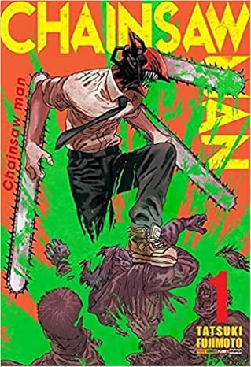
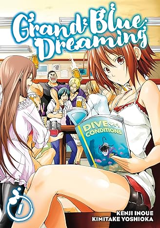
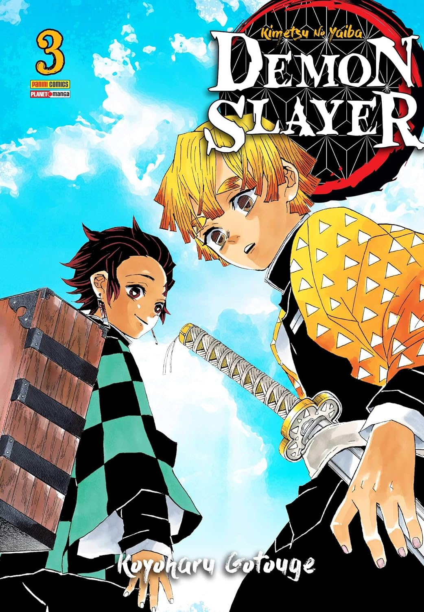
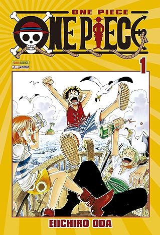

Chainsaw man
Denji é um jovem extremamente pobre que junto de Pochita, seu demônio de estimação,
trabalha feito um condenado como Caçador de Demônios para pagar a imensa dívida que
possui. Mas sua vida de miséria está prestes a mudar graças a uma traição brutal!!
Aqui começa a história de um novo anti-herói que com um demônio em seu corpo, caça
demônios!!
Learn More

Grand Blue
Depois de se formar em uma escola só para meninos, Iori Kitahara se muda de casa para cursar
uma faculdade em uma cidade litorânea. Ele está ansioso para começar um novo capítulo em sua
vida
— um capítulo cheio de sonhos de se reinventar, conhecer garotas bonitas e aproveitar sua
juventude.
Mas quando sua nova morada é a loja de mergulho de seu tio, a estreia de Iori na faculdade
não sai
tão glamourosa quanto ele planejou! Iori conseguirá se manter à tona ou as palhaçadas
movidas a bebida
do clube de mergulho de sua universidade o levarão embora?!
Learn More

Kimetsu no Yaiba
Estamos na Era Taishou. O dia-a-dia pacato de Tanjiro, um gentil garoto que vende carvão,
se transforma radicalmente quando sua família é assassinada por um demônio. A única
sobrevivente
é Nezuko, sua irmã mais nova. Porém, agora, ela se transformou em um Oni. Diante dessa
tragédia,
os dois irmãos partem em uma jornada para derrotar o Oni que matou sua mãe e irmãozinhos. E
assim
tem início uma aventura sanguinolenta de espadachins!
Learn More

One Piece
Luffy é um garoto que deseja tornar-se um pirata por causa do Shanks. Durante uma discussão
com Shanks por causa de alguns bandidos das montanhas, o garoto acaba comendo a Gomu Gomu
no Mi. Mais tarde, porém, os bandidos retornam e Luffy decide comprar briga com eles bem
quando os piratas não estão lá para protegê-lo. Shanks salva Luffy, mas acaba perdendo
seu braço esquerdo por conta disso e logo deixa seu chapéu com o garoto.
Learn More